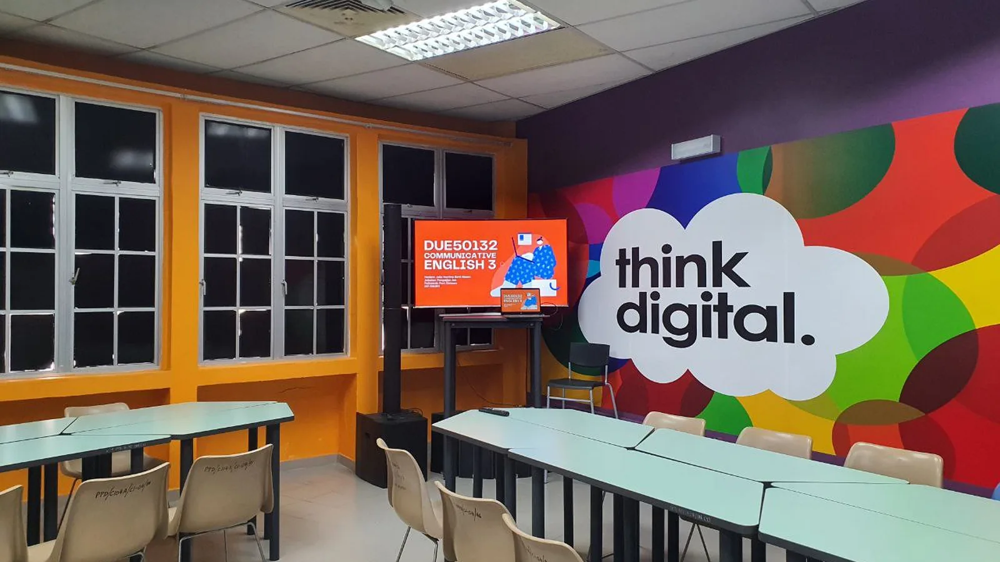
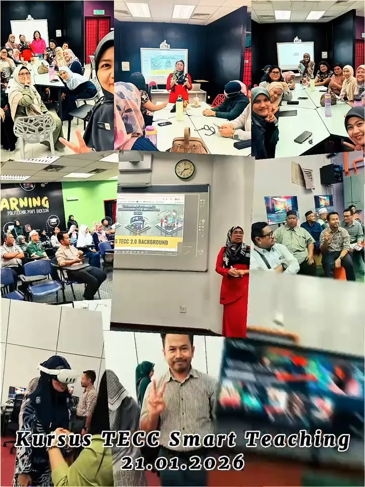
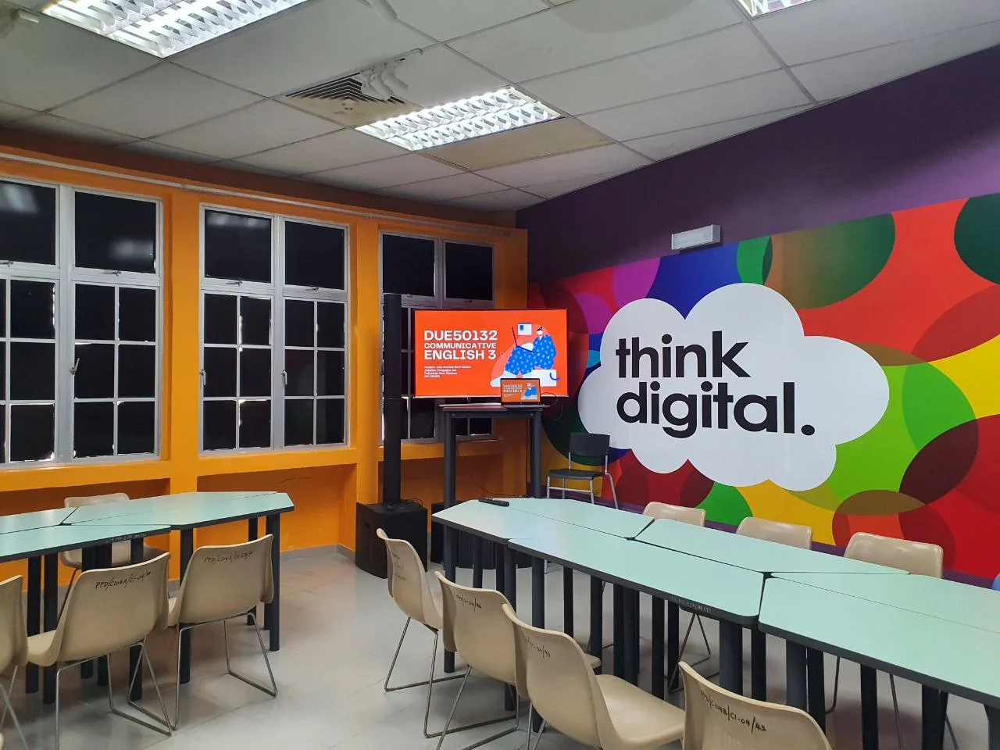
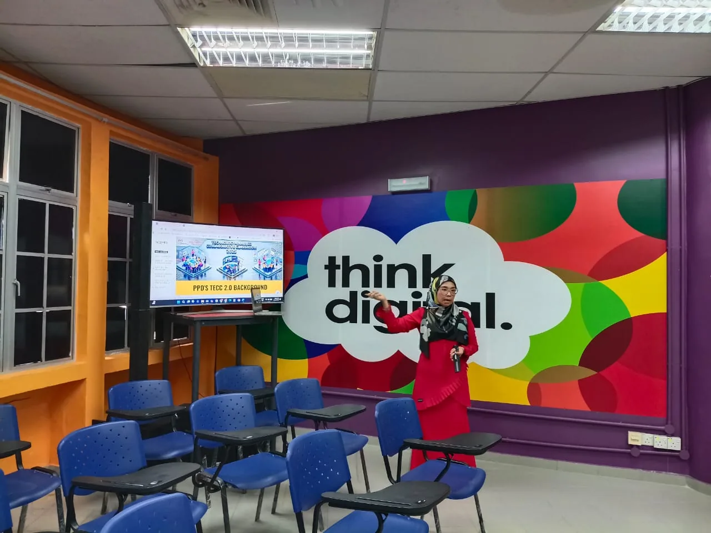

Tatacara / SOP
Rujukan garis panduan TECC 2.0 tersedia. Status SOP semasa dan versi berkuat kuasa perlu disahkan.
TECC 2.0 memfokuskan PdP berjadual, kolaborasi pelajar dan aktiviti akademik serta ko-kurikulum.
Profil ruang, fasiliti dan tujuan.

Sumber: jadual waktu dan e-Booking JPA. Lihat Bukti & Lampiran ↗
Pengurusan ruang, SOP dan penyelenggaraan.
Rujukan garis panduan TECC 2.0 tersedia. Status SOP semasa dan versi berkuat kuasa perlu disahkan.
Jabatan Pengajian Am / penyelaras TECC — nama pegawai semasa perlu disahkan.
Rekod pemeriksaan, aduan peralatan dan tindakan penyelenggaraan perlu dilampirkan.
TECC 2.0 Guideline Final ↗
Panduan operasi dan modul pendidik: lihat lampiran ↗
Angka dan carta utama pada satu paparan.
Jadual, rekod aktiviti dan garis masa 2026.
TECC 2.0 menggunakan dua kaedah: PdP berjadual dan penggunaan berkala di luar jadual. Hanya tempoh yang tidak bertindih boleh dijumlahkan sebagai jam penggunaan tambahan.
| Tarikh | Nama aktiviti | Jam | Ringkasan / status | Bukti |
|---|
| Bulan | PdP berjadual | Tempahan tambahan | Aktiviti | Bukti Drive |
|---|



Rujukan bukti penuh: Google Sites TECC. Lihat Bukti & Lampiran ↗

Dapatan utama dan kesediaan bukti mengikut rubrik bintang.
Pencapaian, inovasi dan saluran penyebarluasan.
Nyatakan saluran penyebarluasan yang digunakan untuk berkongsi aktiviti sebenar, disertakan bukti pautan atau tangkap layar rasmi.
Pautan artikel aktiviti perlu diisi selepas disahkan.
Pautan siaran rasmi perlu diisi selepas disahkan.
Rekod komunikasi dalaman perlu dipilih mengikut kesesuaian.
Laporan 2025 dikekalkan di sini. Tambah bahagian 2026 mengikut arahan penyelaras.


Tindakan untuk melengkapkan laporan dan meningkatkan ruang.
Surat, dokumen dan bukti sokongan.